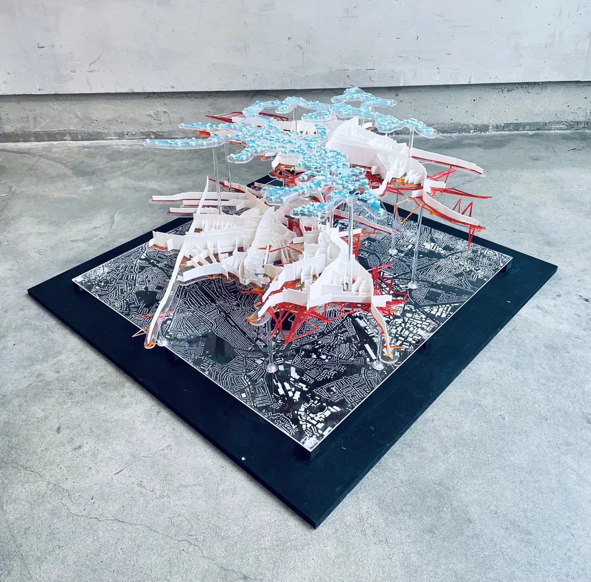

I've always wanted to design for people.
Data is how I get close enough to understand them.

IsoChronic City — Physical Model · Bartlett B-Pro · 2023A master's thesis at the Bartlett School of Architecture, UCL. Post-pandemic reurbanisation through 15-minute neighbourhood principles, machine learning, and generative design.
5, 10, and 15 minute walk catchments and 20 and 30 minute drive catchments mapped across Bangalore. Which neighbourhoods are truly accessible — and which ones depend entirely on a car.
Classifying Bangalore's urban fabric by the shape of its streets, blocks, and buildings. From the organic grain of the old pete to the sprawling plots of the north — every neighbourhood has a morphological fingerprint.
Building a multi-sensor urban data collection instrument from scratch. GPS, temperature, humidity, and audio running on the NVIDIA Jetson Orin Nano Super. Documenting the build process as it happens.
Ten Revit API tools built in Python using pyRevit for large-scale residential and commercial AEC projects. Tools include: Create Worksets · Assign Worksets · Wall Base · Wall Top · Door Base · Copy Units · Mirror Units · ParaControl.
The instrument is taking shape. First field tests in Bangalore — what the data looks like, what it reveals, and what it doesn't.